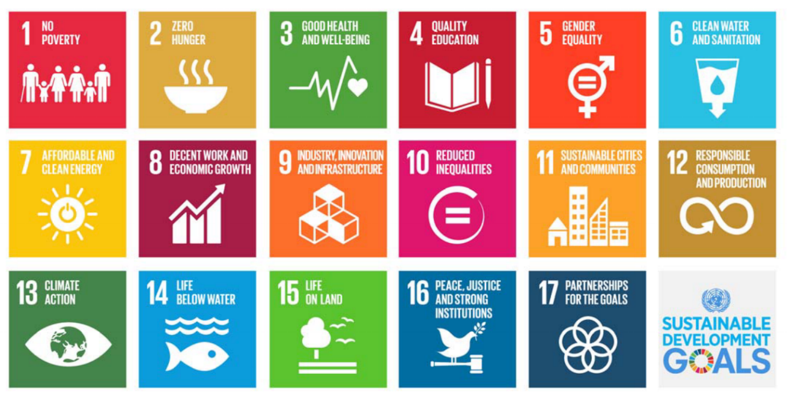
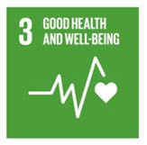
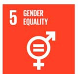
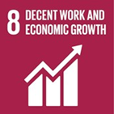
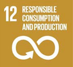
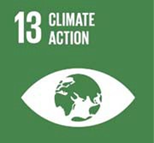

Sustainable Development Goals (SDG)

Quality Education SDG4:
Ensure inclusive and equitable quality education and promote lifelong learning opportunities for all
SDG4 - Key Features
Principles
Universally‐relevant
Rights‐based and a public good
Scope
Expanded access to all levels of education
Holistic and lifelong learning approach
Equity
- Renewed focus on inclusion, equity and gender equality
Quality
Renewed focus on effective acquisition of foundational skills
New focus on relevance of learning for decent jobs
New focus on relevance of learning for social and civic life
Indicators to monitor SDG4 progress
11 Global indicators [obligatory]: Minimum set of internationally‐comparable indicators that countries are expected to report on at the global level.
43 Thematic indicators [optional]: A more comprehensive set of internationally‐comparable indicators that countries may use to report on progress toward SDG4 at the global level.
Regional indicators: Specific indicators, common to countries within a specific region, may also be developed to collectively monitor and report on progress.
National indicators: Monitoring at country level will also include context‐specific indicators essential for monitoring and regulating national educational development.
SDG4 Outcomes
| Targets | |
|---|---|
| 4.1 | Quality primary/secondary education for all |
| 4.2 | Early childhood & pre‐primary education |
| 4.3 | Equal access to TVET & higher education |
| 4.4 | Relevant skills for work |
| 4.5 | Gender equality & equal access for all |
| 4.6 | Youth and adult literacy |
| 4.7 | Global citizenship education for sustainability |
| Means of implementation | |
|---|---|
| 4.a | Safe & inclusive learning environments |
| 4.b | Scholarships for higher education |
| 4.c | Teachers’ training and working conditions |
Education targets/indicators within other SDGs
Health and Well‐being

Target 3.7: By 2030, ensure universal access to sexual and reproductive health ‐care services, including for family planning, information and education, and the integration of reproductive health into national strategies and programmes
Gender Equality

Global Indicator: Number of countries with laws and regulations that guarantee women aged 15‐49 years access to sexual and reproductive health care, information and education
Decent Work and Economic Growth

Target 8.6: By 2020 substantially reduce the proportion of youth not in employment, education or training
Responsible Consumption & Production

Target 12.8: By 2030 ensure that people everywhere have the relevant information and awareness for sustainable development and lifestyles in harmony with nature
Climate Change Mitigation

Target 13.3: Improve education, awareness raising human and institutional capacity on climate change mitigation, adaptation, impact reduction, and early warning
List of SDG-4 Indicators, Targets, Means of Implementations
4.1. By 2030, ensure that all girls and boys complete free, equitable and quality primary and secondary education leading to relevant and effective learning outcomes
| Concepts | |
|---|---|
| Learning | 1. Proportion of children and young people both sexes (a) in Grade 2 or 3; (b) at the end of primary education; and (c) at the end of lower secondary education achieving at least a minimum proficiency level in (i) reading and (ii) mathematics |
| 2. Administration of a nationally-representative learning assessment (a) in Grade 2 or 3; (b) at the end of primary education; and (c) at the end of lower secondary education | |
| Completion | 3. Gross intake ratio to the last grade (primary education, lower secondary education) |
| 4. Completion rate (primary education, lower secondary education, upper secondary education) | |
| Participation | 5. Out-of-school rate (primary education, lower secondary education, upper secondary education) |
| 6. Percentage of children over-age for grade (primary education, lower secondary education) | |
| Provision | 7. Number of years of (a) free and (b) compulsory primary and secondary education guaranteed in legal framework |
4.2. By 2030, ensure that all girls and boys have access to quality early childhood development, care and pre-primary education so that they are ready for primary education
| Concepts | |
|---|---|
| Readiness 8. | Proportion of children under 5 years of age who are developmentally on track in health, learning and psychosocial well-being, by sex |
| 9. Percentage of children under 5 years experiencing positive and stimulating home learning environments | |
| Participation | 10. Participation rate in organized learning (one year before the official primary entry age), by sex |
| 11. Gross pre-primary enrolment ratio | |
| Provision | 12. Number of years of (a) free and (b) compulsory pre-primary education guaranteed in legal frameworks |
4.3. By 2030, ensure equal access for all women and men to affordable and quality technical, vocational and tertiary education, including university
| Concepts | |
|---|---|
| Readiness | 13. Gross enrolment ratio for tertiary education by sex |
| 14. Participation rate in technical-vocational programmes (15-24 year-olds) by sex | |
| 15. Participation rate of youth and adults in formal and non-formal education and training in the previous 12 months, by sex |
4.4. By 2030, substantially increase the number of youth and adults who have relevant skills, including technical and vocational skills, for employment, decent work and entrepreneurship
| Concepts | |
|---|---|
| Skills | 16.1. Percentage of youth/adults who have achieved at least a minimum level of proficiency in digital literacy skills |
| 16.2. Proportion of youth and adults with information and communications technology (ICT) skills, by type of skill | |
| 17. Youth/adult educational attainment rates by age group, economic activity status, levels of education and programme orientation |
4.5. By 2030, eliminate gender disparities in education and ensure equal access to all levels of education and vocational training for the vulnerable, including persons with disabilities, indigenous people and children in vulnerable situations
| Concepts | |
|---|---|
| Equity cross targets | Parity indices (female/male, rural/urban, bottom/top wealth quintile and others such as disability status, indigenous people and conflict-affected, as data become available) for all education indicators on this list that can be disaggregated |
| Where possible, other indicators should be presented in relation to their distribution across the study population | |
| Policy 18. | Percentage of students in primary education whose first or home language is the language of instruction |
| 19. Extent to which explicit formula-based policies reallocate education resources to disadvantaged population segments | |
| 20. Education expenditure per student by level of education and source of funding | |
| 21. Percentage of total aid to education allocated to least developed countries |
4.6. By 2030, ensure that all youth and a substantial proportion of adults, both men and women, achieve literacy and numeracy
| Concepts | |
|---|---|
| Skills | 22. Percentage of population in a given age group achieving at least a fixed level of proficiency in functional (a) literacy and (b) numeracy skills, by sex |
| 23. Youth/adult literacy rate | |
| Provision 24. | Participation rate of youth/adults in literacy programmes |
4.7. By 2030, ensure that all learners acquire the knowledge and skills needed to promote sustainable development, including, among others, through education for sustainable development and sustainable lifestyles, human rights, gender equality, promotion of a culture of peace and non-violence, global citizenship and appreciation of cultural diversity and of culture’s contribution to sustainable development
| Concepts | |
|---|---|
| Provision | 25. Extent to which (i) global citizenship education and (ii) education for sustainable development, including gender equality and human rights, are mainstreamed at all levels in: (a) national education policies, (b) curricula, (c) teacher education and (d) student assessment |
| Knowledge | 26. Percentage of students by age group (or education level) showing adequate understanding of issues relating to global citizenship and sustainability |
| 27. Percentage of 15-year-old students showing proficiency in knowledge of environmental science and geoscience | |
| 28. Percentage of schools that provide life skills-based HIV and sexuality education | |
| 29. Extent to which the framework on the World Programme on Human Rights Education is implemented nationally (as per the UNGA Resolution 59/113) |
4.a. Build and upgrade education facilities that are child, disability and gender sensitive and provide safe, non-violent, inclusive and effective learning environments for all
| Concepts | |
|---|---|
| Resources | 30. Proportion of schools with access to: (e) basic drinking water; (f) single sex basic sanitation facilities; and (g) basic handwashing facilities (as per the WASH indicator definitions) |
| 31. Proportion of schools with access to: (a) electricity; (b) Internet for pedagogical purposes; and (c) computers for pedagogical purposes | |
| 32. Proportion of schools with access to: (d) adapted infrastructure and materials for students with disabilities | |
| Environment | 33. Percentage of students experiencing bullying, corporal punishment, harassment, violence, sexual discrimination and abuse |
| 34. Number of attacks on students, personnel and institutions |
4.b. By 2020, substantially expand globally the number of scholarships available to developing countries, in particular least developed countries, small island developing States and African countries, for enrolment in higher education, including vocational training and information and communications technology, technical, engineering and scientific programmes, in developed countries and other developing countries
| Concepts | |
|---|---|
| Resources | 35. Number of higher education scholarships awarded by beneficiary country |
| 36.Volume of official development assistance flows for scholarships by sector and type of study |
4.c. By 2030, substantially increase the supply of qualified teachers, including through international cooperation for teacher training in developing countries, especially least developed countries and small island developing States
| Concepts | |
|---|---|
| Qualified | 37. Proportion of teachers qualified according to national standards by education level and type of institution |
| 38. Pupil-qualified teacher ratio by education level | |
| Trained | 39. Proportion of teachers in: (a) pre-primary education; (b) primary education; (c) lower secondary education; and (d) upper secondary education who have received at least the minimum organized teacher training (e.g., pedagogical training) pre-service or in-service required for teaching at the relevant level in a given country, by sex |
| 40. Pupil-trained teacher ratio by education level | |
| Motivated | 41. Average teacher salary relative to other professions requiring a comparable level of qualification |
| 42. Teacher attrition rate by education level | |
| Supported | 43.Percentage of teachers who received in-service training in the last 12 months by type of training |